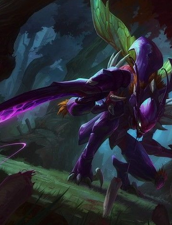

| 中文名 | 虚空掠夺者-卡兹克 | 外文名 | Kha Zix |  |
| 称 号 | 螳螂 | 登场作品 | 英雄联盟 | |
| 攻击力 | 50(+3.1 / 每级) | 定 位 | 刺客 近战 打野 | |
| 价 格 | 6300金币或4500点卷 | 国 籍 | 虚空 | |
| 英雄介绍 | ||||
| 卡兹克——一个邪恶的虚空猎食者，他入侵到瓦罗兰大陆，寻找着那些可以让他感受到狩猎乐趣的生物。随着他不停的残杀猎物，吸收他们的力量，通过这种方式他向着更强大的力量不断的进化。卡兹克最渴望征服并毁灭的猎物便是雷恩加尔，一个他认为实力和他相当的野兽。 当卡兹克初次来到这个世界的时候还非常虚弱，急需食物来果腹。最初遇到的野兽对他来说都过于弱小，完全不能满足他进化所需的力量。卡兹克把注意力都放在这个世界最危险的生物上，他用自己的生命作为赌注来换取他内心所渴望的那种满足感。每一次狩猎都会让他饱餐一顿，并让他逐渐进化为更加强大的掠食者。卡兹克用他永不消退的侵略欲望来追杀他的猎物。卡'兹克开始无止境的侵略他的猎物，他坚信自己无人能挡。. |
||||